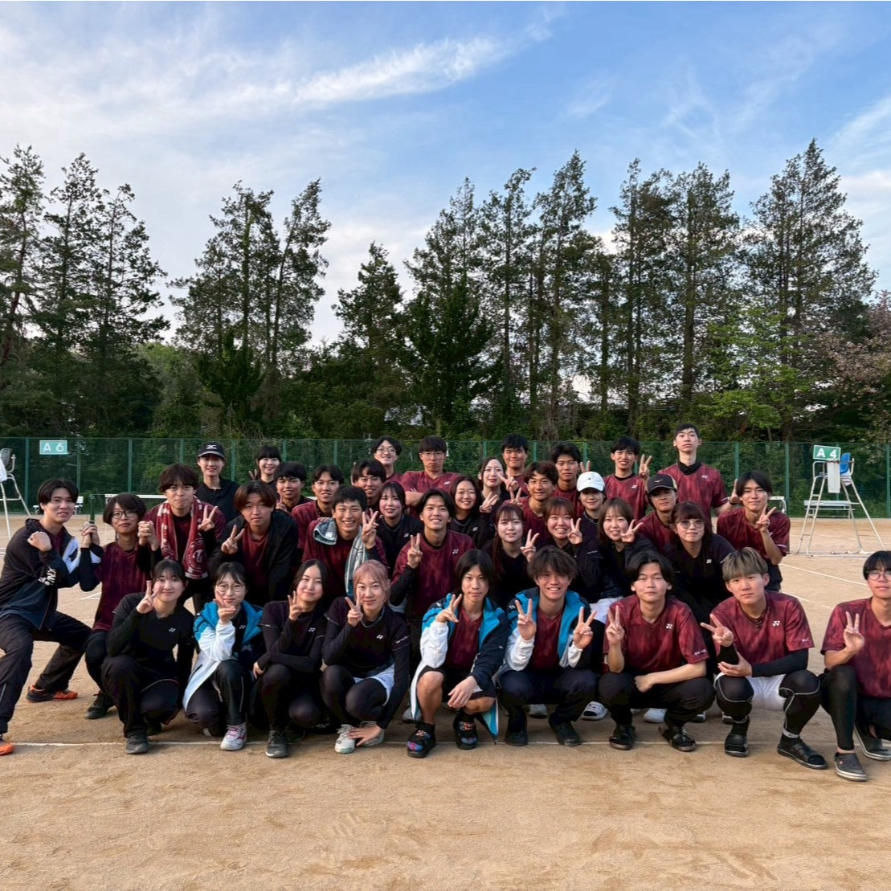

| ここは名古屋大学医学部ソフトテニス部のホームページです。 公式Twitterはこちら |
|
全医体(20 西医体（2024） 関西医歯薬 2026 団体戦 男子 ベスト8 女子 ベスト8 個人戦 男子 界外・玉腰 ベスト16 佐々・村木 ベスト16 川森・中川 ベスト16 行田・清遠 ベスト32 女子 敷谷・新井 ベスト16 佐藤・吉田 ベスト32 ⇒部活紹介のページへ |
|
 |
今後の予定 6/27-6/28 春東海 ＠長浜城テニスガーデン |
| Information
| |
| 管理人 岸田唯愛 （3年） soft_tennis_nm@hotmail.co.jp |
|